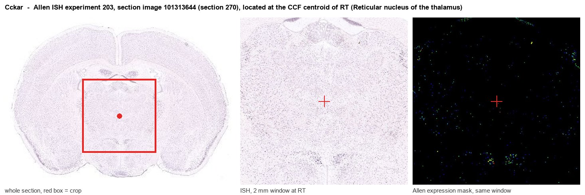

Cckar
Cholecystokinin receptor type A (CCK-A receptor) (CCK-AR) (Cholecystokinin-1 receptor) (CCK1-R)
Spatial tier: REGION_BIASED · Class: GPCR · Top region: RT (Reticular nucleus of the thalamus) · Positive regions: 29/554
45.8Discovery Score
40.4Targetability Score
CEvidence grade C
What this means: Cckar: fine CCF profile is region-biased toward RT (top regions: RT, PD, MPN, B, IPR); this is a discovery lead, not direct proof.
Function in RT: evidence, prediction, innovation
- Gene function
- CCKAR (CCK1 receptor) is a Gq-coupled G protein-coupled receptor for sulfated cholecystokinin. Activation stimulates PLC, IP3-mediated calcium release and PKC, typically depolarising neurons by suppressing potassium conductances; peripherally it mediates CCK-induced satiety and gallbladder contraction.
- Region function
- The thalamic reticular nucleus is a shell of parvalbumin-rich GABAergic neurons that surrounds the thalamus and provides the main inhibitory feedback onto relay nuclei; its burst firing generates sleep spindles and it gates sensory transmission during attention.
- Published in this region
- direct The thalamic reticular nucleus is one of the densest CCK-binding sites in the brain. Pelaprat 1987 localised CCK binding sites postsynaptically in the TRN and proposed a modulatory role in sensory transmission, and Cox 1995 showed with whole-cell recording that CCK depolarises rat reticular thalamic neurons by suppressing a potassium conductance; Lee 1997 showed CCK modulates spindle oscillations in the perigeniculate/reticular sector. Receptor-subtype attribution to CCKAR rather than CCKBR was not resolved in those studies.
- Predicted function
- Prediction: CCKAR provides the Gq mechanism by which CCK depolarises reticular neurons, switching them from burst to tonic mode and thereby suppressing spindle generation during arousal. Intra-TRN CCKAR antagonism (devazepide) or conditional Cckar deletion in PV-positive reticular neurons should increase spindle density and NREM stability and impair attentional filtering of distractors, while a CCKAR agonist (A-71623) is predicted to depolarise reticular cells, reduce spindles and fragment NREM sleep.
- Innovation
- ★★★☆☆ 3/5 The CCK-TRN physiology was mapped in the 1980s-90s but has never been revisited with modern subtype-specific genetic and sleep-recording tools.
- Tools
- CCKAR antagonist devazepide (MK-329) and agonist A-71623; Cckar knockout mice and OLETF rat; Cck-Cre and Cckar-Cre driver lines (JAX); PV-Cre and Gbx2-based TRN targeting; TRN-selective AAV enhancers reported for PV/GABAergic cells.
- References
Direct evidence located at the region

Allen ISH experiment 203, section image 101313644 (section 270): the section that contains the CCF centroid of Reticular nucleus of the thalamus according to the Allen image-to-atlas alignment (reference_to_image), with a 2 mm window around that point. Left: whole section, red box = window. Middle: ISH signal. Right: Allen's expression-mask view of the same window. open this image in the Allen viewer
Look it up yourself: Allen Mouse Brain ISH for CckarAllen reference atlas: RT (structure 262)ABC Atlas MERFISH viewer(in the ABC Atlas choose dataset MERFISH-C57BL6J-638850-CCF, colour cells by gene "Cckar" or by parcellation_substructure "RT")All genes confined to RT + 3-D brain
Direct spatial evidence
MERFISH REGION LOCATOR

Regional expression figure

Predicted WMB × fine-CCF profile; not direct full-transcriptome spatial measurement.
Spatial profile
Evidence and specificity
- Evidence status
- PREDICTED_FINE
- Direct sources
- None; predicted localization only
- Exclusive threshold
- 12 positive regions out of 554
- Spatial specificity
- 0.330
- Top-region fraction
- 0.065
- Filter status
- PASS
Interpretation limits
- Cell-type-to-region projection is imputed expression, not direct spatial measurement.
- Adult reference atlases do not establish stability across age, sex, strain, state, or disease.
- Transcript abundance does not guarantee protein abundance or genetic-tool performance.